OM MIG
Hej, jeg hedder Christian
Mit navn er Christian Markussen, jeg er 21 år og studerer Software Engineering på VIA University College i Horsens. Jeg har en stor interesse for teknologi og for at skabe ting, både digitalt og fysisk. Gennem mine projekter arbejder jeg blandt andet med programmering, webudvikling, 3D-print og design.
Uden for studiet bruger jeg meget af min tid på mine forskellige interesser. Jeg går blandt andet i fitness, fotograferer, rejser og arbejder på forskellige små projekter. Jeg kan godt lide at have noget konkret at arbejde hen imod, uanset om det er at lære et nyt programmeringssprog, færdiggøre et projekt eller nå et bestemt mål i fitness.
21
år
VIA
Software Ingeniør
Horsens
Danmark

01 · SOFTWARE INGENIØR & PROGRAMMERING
Software Ingeniør
Jeg har valgt at studere Software Engineering, fordi jeg godt kan lide kombinationen af teknologi, problemløsning og kreativitet. Jeg synes især, det er interessant at kunne starte med en idé og gennem programmering ende med et fungerende produkt eller en løsning. Det er også en af grundene til, at jeg gerne vil arbejde med software, hvor der hele tiden er nye ting at lære og nye problemer at løse.
Min interesse for programmering startede allerede i gymnasiet, hvor jeg havde programmering på C-niveau. Her arbejdede jeg blandt andet med C#, hvor jeg lavede mit eget Ultimate Kryds og Bolle-spil, som kunne spilles direkte i terminalen. Det gav mig en tidlig interesse for at bygge programmer fra bunden og forstå, hvordan de forskellige dele hænger sammen.
På Software Engineering arbejder jeg blandt andet med Java, HTML og CSS samt webudvikling. Jeg er stadig i gang med at lære og udvikle mine programmeringsevner, men jeg synes især, det er spændende at kunne kombinere programmering med design og brugeroplevelse.
MINE MÅL
- Blive betydeligt bedre til Java
- Få en bedre forståelse for softwareudvikling
- Lære flere programmeringssprog og teknologier
- Bygge større og mere komplette egne projekter
- Udvikle mit gamle Ultimate Kryds og Bolle-spil til et rigtigt webbaseret spil
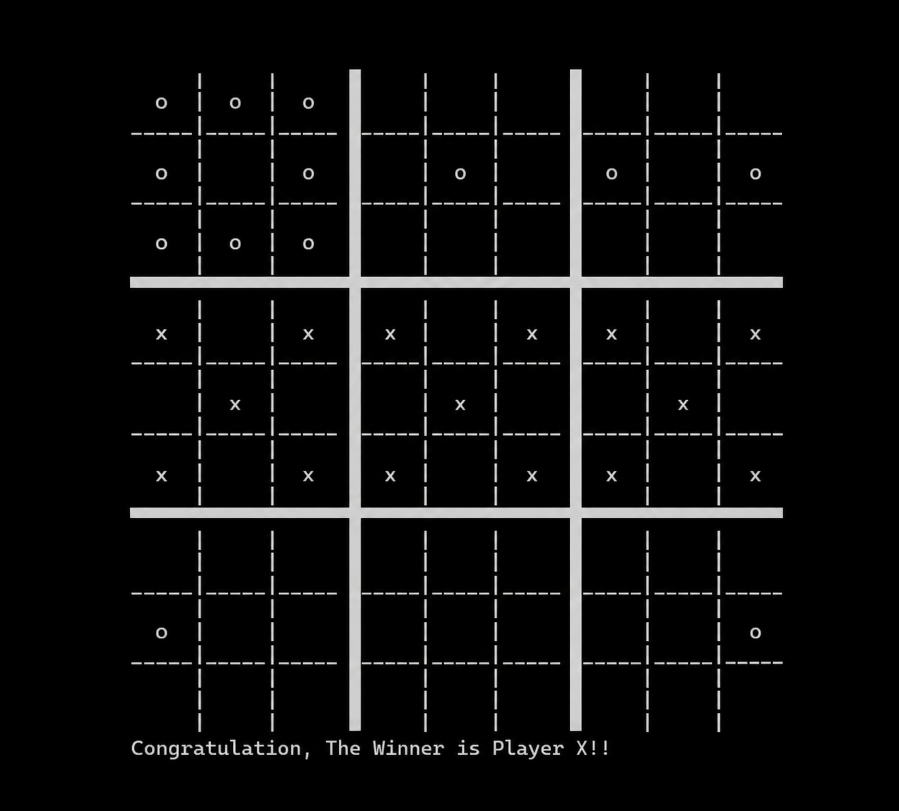
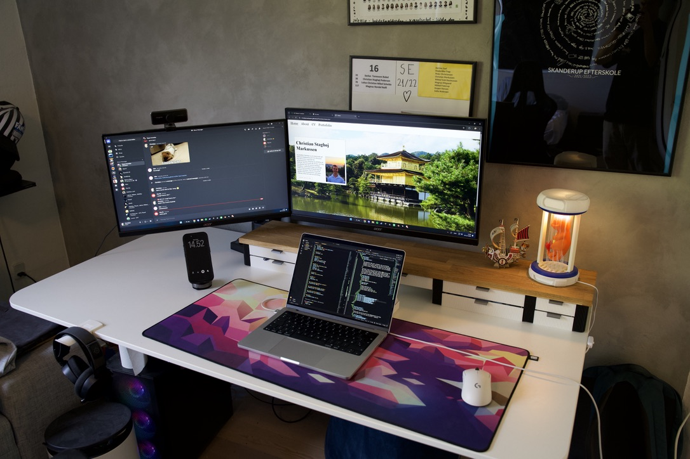
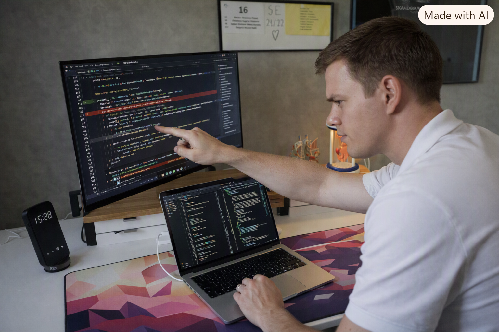
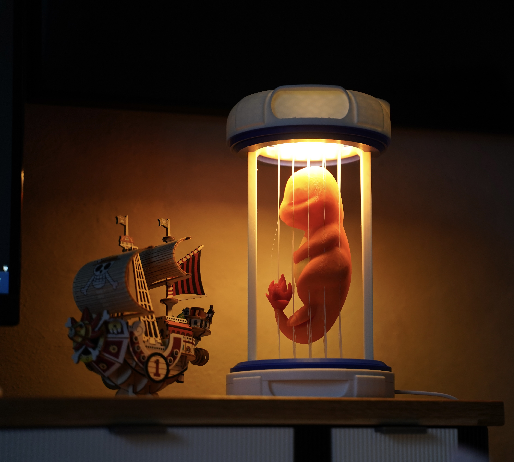
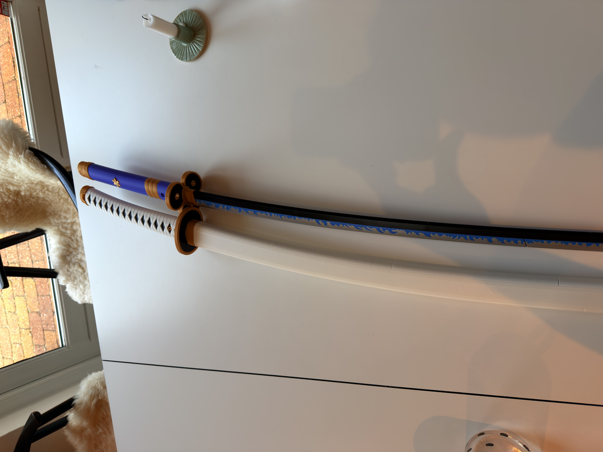

02 · 3D-PRINT & AT BYGGE TING
3D-print
3D-print er en af mine nyere interesser, hvor jeg især godt kan lide muligheden for at gå fra en idé til noget fysisk, jeg rent faktisk kan bruge. Jeg bruger min 3D-printer til både praktiske løsninger, organisering og dekoration, men også bare til at prøve forskellige idéer af.
Noget af det, jeg synes er interessant ved 3D-print, er, at det ikke nødvendigvis behøver at være et stort projekt. En lille ændring i designet kan løse et konkret problem i hverdagen, og jeg kan derefter ændre designet og printe en ny version. Det gør det meget nemt at eksperimentere og lære undervejs.
Jeg har blandt andet lavet forskellige skuffer og organiseringsløsninger til mit skrivebord samt mindre dekorative projekter. Jeg kan godt lide projekter, hvor design, funktionalitet og teknologi mødes.
MINE MÅL
- Blive bedre til selv at designe 3D-modeller
- Lave flere egne designs frem for kun at printe eksisterende modeller
- Arbejde mere med større og mere avancerede projekter
- Kombinere 3D-print med elektronik og programmering
03 · FOTOGRAFI
Fotografi
Fotografi er en interesse, jeg især bruger, når jeg rejser. Jeg kan godt lide at dokumentere de steder, jeg besøger, men også at prøve at finde interessante motiver, vinkler og detaljer, som man måske ellers ville gå forbi.
Jeg fotograferer både natur, arkitektur, byer og forskellige øjeblikke fra mine rejser. Japan har især givet mig rigtig mange muligheder for at fotografere, fordi landet har en stor blanding af moderne storbyer, traditionel arkitektur, natur og hverdagsliv.
Jeg bruger i dag et Sony A7 III med et Tamron 28–75mm f/2.8 Di III RXD, som giver mig et alsidigt setup, jeg kan tage med på både rejser og mindre fototure. Fotografi fungerer også godt sammen med min interesse for rejser, fordi kameraet giver mig en grund til at lægge mærke til omgivelserne på en lidt anden måde.
MIT UDSTYR
Sony A7III
Tamron 28–75mm f/2.8 Di III RXD
MINE MÅL
- Bedre komposition
- Udvikle min egen stil
- Bruge manuelle indstillinger
- Flere billeder værd at vise frem
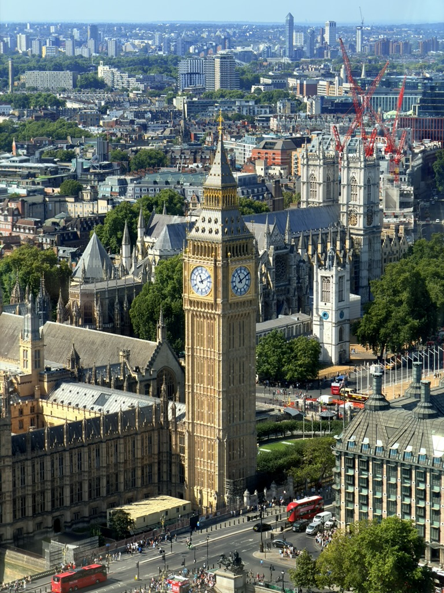
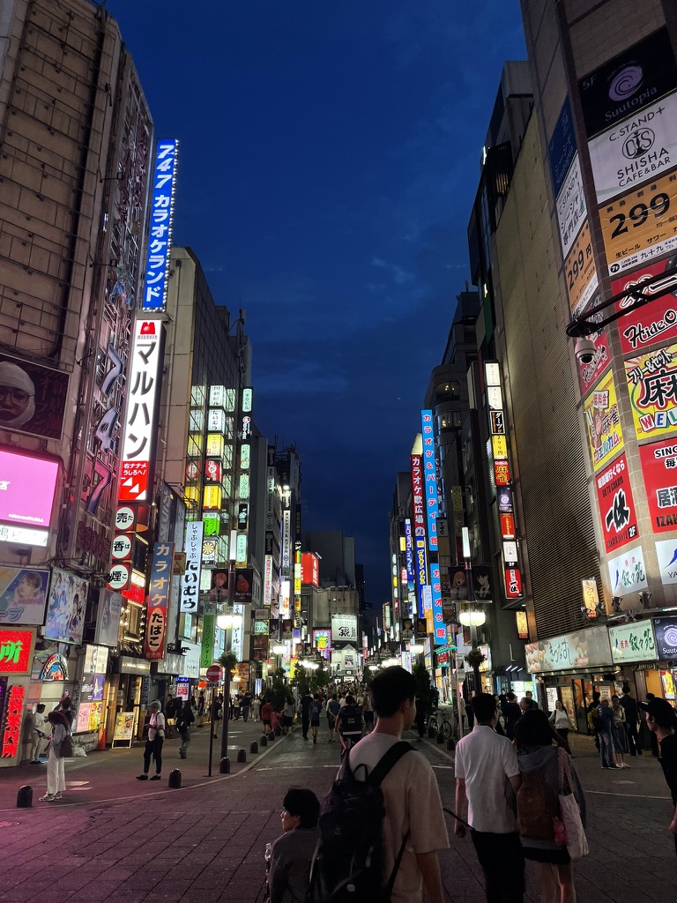
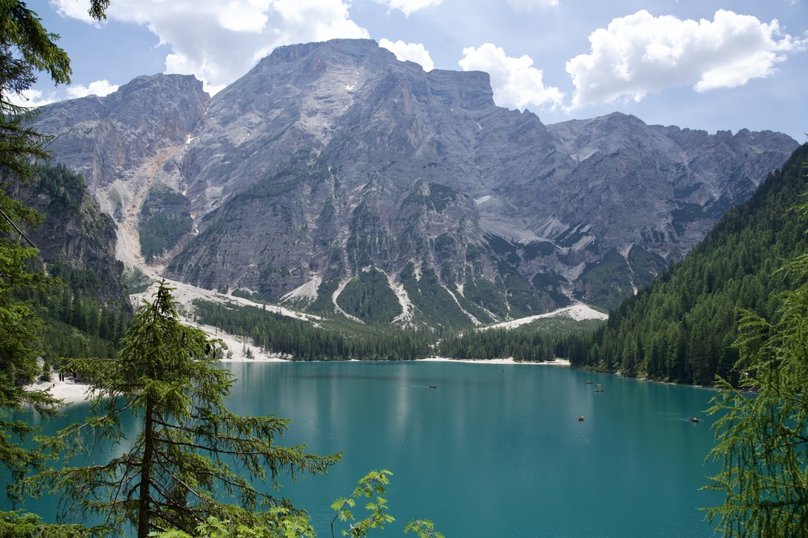
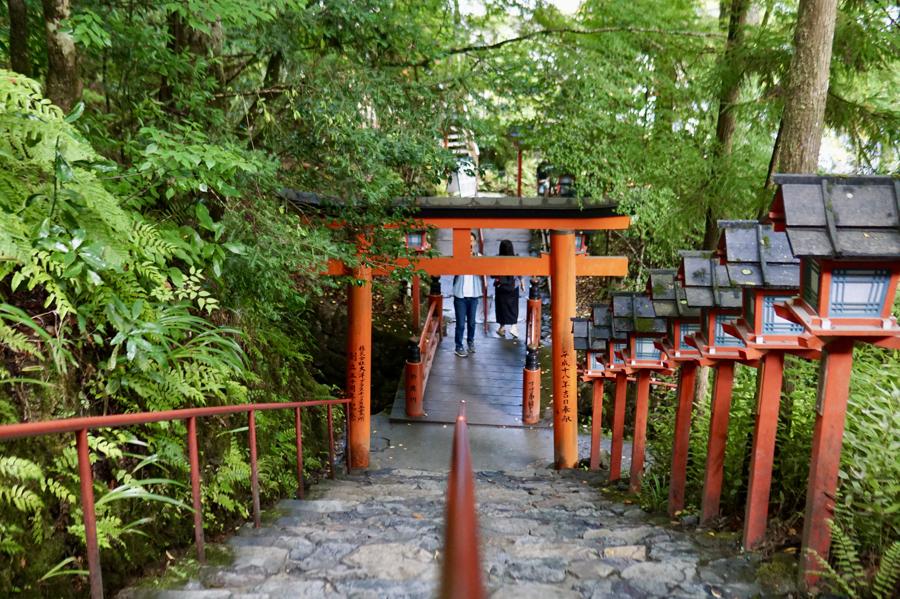
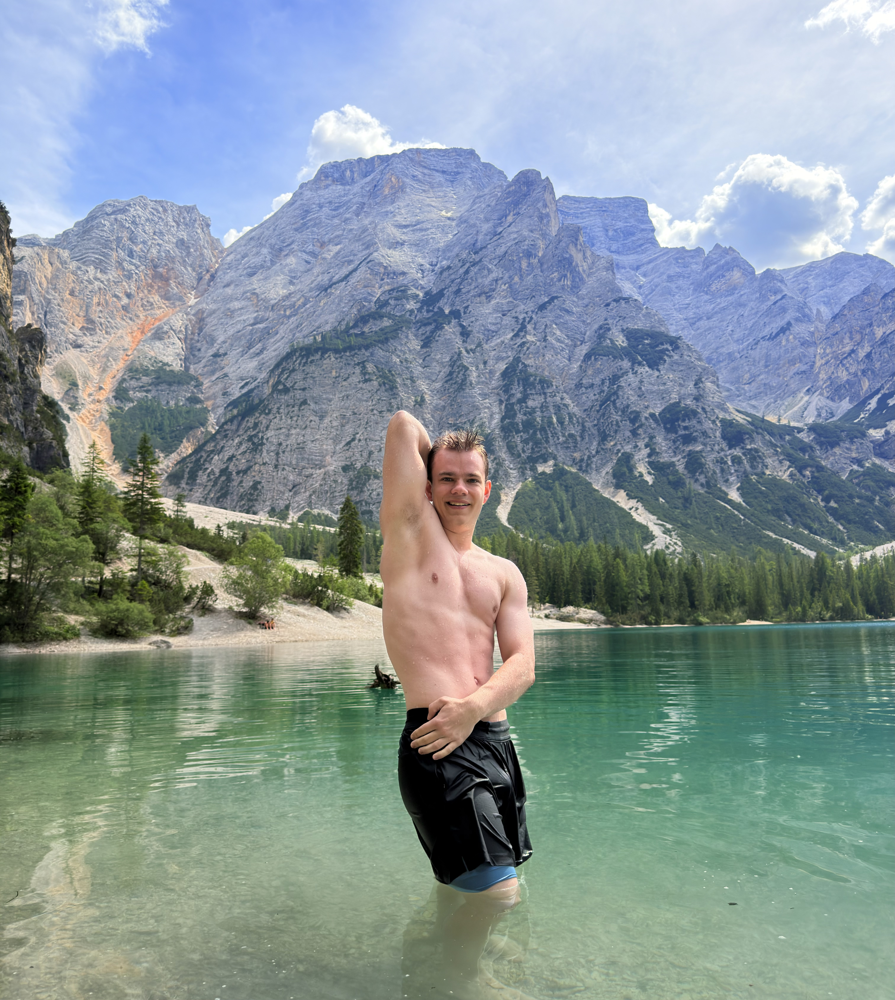
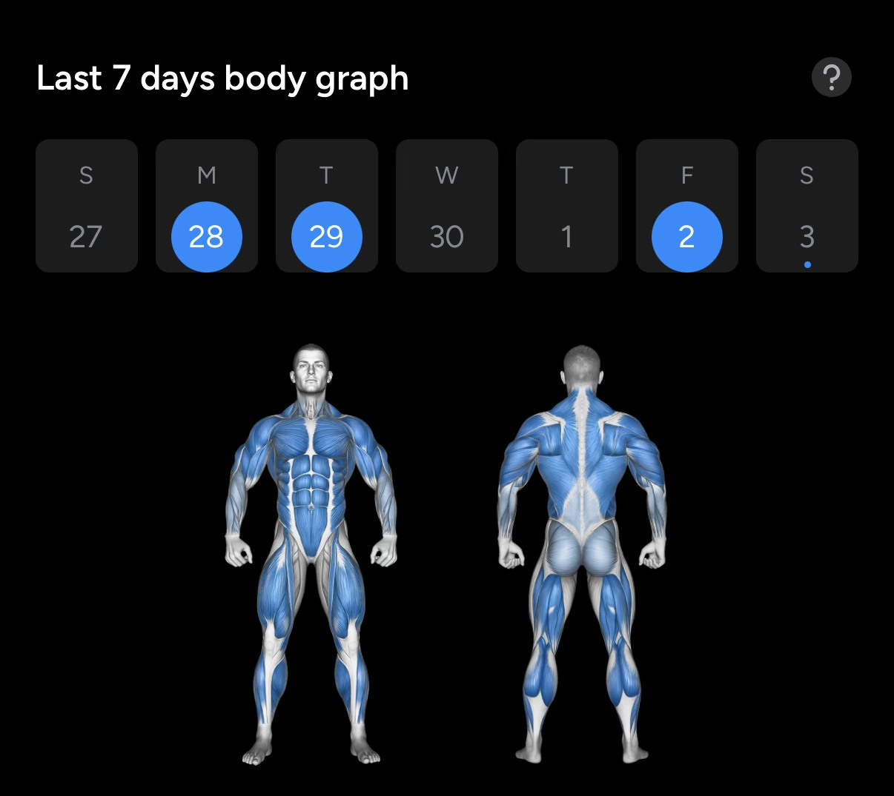
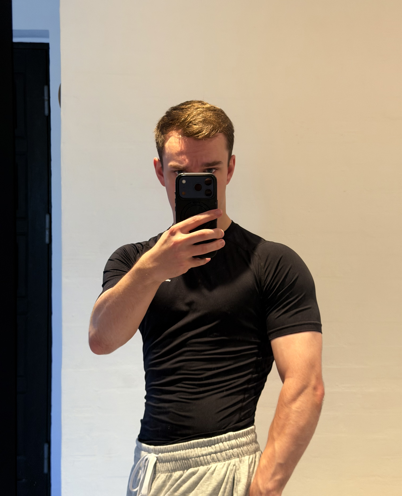
04 · FITNESS & TRÆNING
Fitness
Fitness og styrketræning er en stor del af min hverdag. Jeg har trænet i flere år og bruger især styrketræning som en måde at følge min egen udvikling på. Jeg kan godt lide, at træning giver nogle meget konkrete mål, hvor man kan se sin progression over længere tid.
Jeg træner primært styrketræning, men har også løb som en del af min træning. Noget af det, jeg bedst kan lide ved træning, er følelsen af langsomt at blive stærkere og kunne noget, som jeg ikke kunne nogle måneder tidligere.
Mit største mål er at kunne bænkpresse 100 kg. Jeg har allerede ramt 90 kg, så de sidste 10 kg er blevet et konkret mål, jeg arbejder hen imod. For mig handler træning derfor ikke kun om selve træningen, men også om at sætte mig nogle mål og arbejde langsigtet hen imod dem.
BÆNKPRES
90 kg af 100 kg
- Fortsætte med at blive stærkere
- Holde en stabil træningsrutine
- Blive bedre til løb og kondition
- Fortsætte med at sætte nye mål, når de gamle bliver nået
05 · REJSER
Rejser
Jeg har altid syntes, at det er spændende at opleve nye steder og se, hvordan andre lande og kulturer er forskellige fra Danmark. Jeg har derfor været heldig at opleve flere forskellige steder gennem både familie, skole og rejser med venner.
Jeg har blandt andet været i New York, Tacoma, Portland, Japan, London og flere europæiske lande gennem Interrail. Jeg boede blandt andet et år i Portland, da jeg var omkring 3–4 år, og gennem gymnasiet var jeg på tur til Tacoma.
STEDER JEG HAR VÆRET
Tokyo · Kyoto · Osaka
Japan
Japan er uden tvivl den rejse, jeg har haft mest at fortælle om. Jeg var i Japan i efteråret 2026 og rejste blandt andet rundt i Tokyo, Kyoto og Osaka. Det var en rejse, hvor jeg både oplevede store moderne byer, traditionel japansk kultur, natur og en masse af den teknologi og hverdag, jeg i forvejen interesserer mig for.
Japan var også en af de rejser, hvor jeg brugte mit kamera mest. Det var derfor en rejse, der kombinerede flere af mine interesser på én gang.
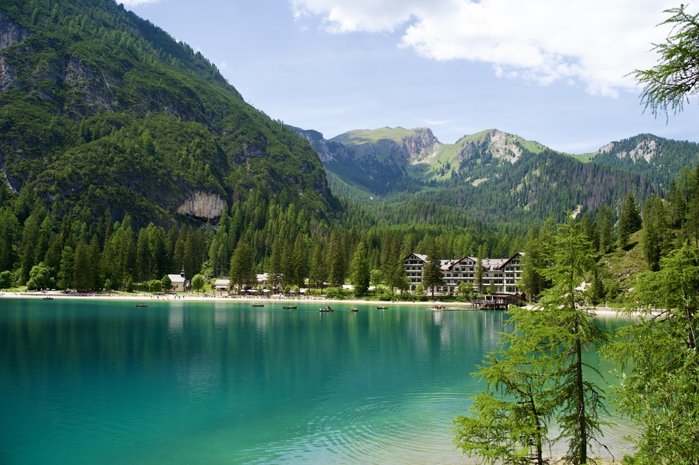
Europa
Interrail
Jeg har også rejst rundt i Europa med Interrail, hvor jeg blandt andet oplevede flere forskellige europæiske byer og lande på samme rejse. Her var noget af det interessante netop at kunne bevæge sig mellem forskellige steder og opleve, hvor meget landskab, arkitektur og kultur kan ændre sig på relativt kort tid.
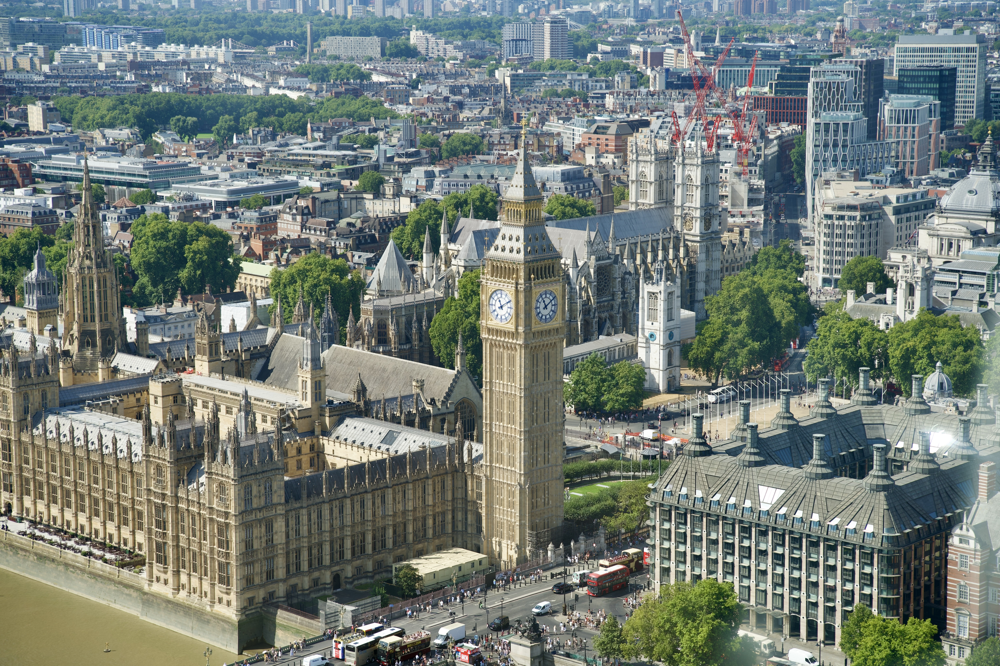
England
London
London var endnu en tur, hvor oplevelserne var en stor del af turen. Et af højdepunkterne var at se The Weeknd live, hvilket var en virkelig fed koncertoplevelse.

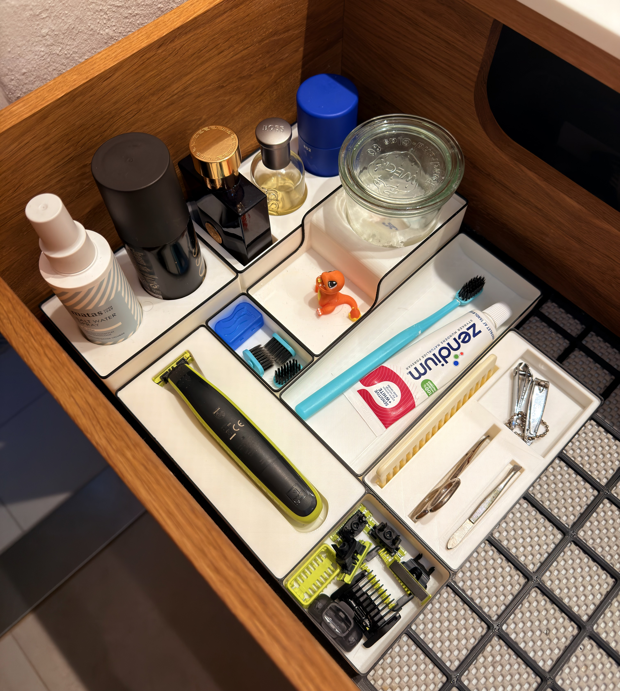
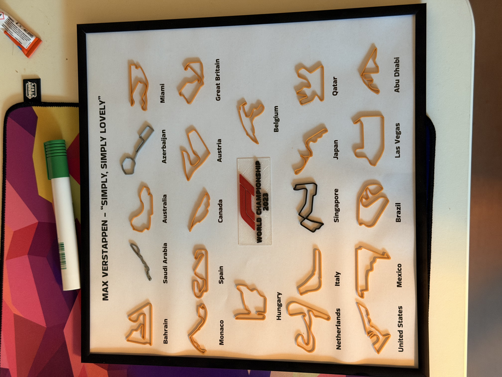
06 · PROJEKTER & TING JEG LAVER
Mine projekter
Jeg kan godt lide at have forskellige projekter kørende, hvor jeg kan lære noget nyt eller bare prøve en idé af. Projekterne behøver ikke nødvendigvis være store eller særligt seriøse. For mig kan et projekt både være et større skoleprojekt, et program, noget jeg designer og 3D-printer, eller noget jeg bygger, fordi jeg synes, det kunne være sjovt.
Jeg har blandt andet arbejdet med mekatronikprojekter, programmering, webudvikling og forskellige 3D-printede løsninger. Jeg synes især, det er sjovt, når et projekt giver mig mulighed for at kombinere flere interesser. Et projekt kan for eksempel starte som en idé på computeren og ende som et fysisk produkt på skrivebordet.
07 · GAMING
Gaming
Computerspil har været en interesse for mig i mange år. Jeg synes ikke kun, det interessante er at spille spillene, men også at tænke over, hvordan de er bygget op, og hvordan programmering, design og brugeroplevelse bliver kombineret for at skabe et færdigt spil.
Det er også en af grundene til, at jeg synes programmering er spændende. Jeg har selv prøvet kræfter med at lave spil, blandt andet mit Ultimate Kryds og Bolle-spil i C# fra gymnasiet. Selvom det var et simpelt terminalspil, var det interessant at skulle tænke over regler, spiltilstande og hvordan spilleren skulle interagere med programmet.
På længere sigt kunne jeg godt tænke mig at arbejde mere med spiludvikling og prøve at bygge nogle større spilprojekter selv. Jeg synes især kombinationen af programmering, grafik, design og interaktion gør spiludvikling interessant.
MINE MÅL
- Lave et komplet spil som et større eget projekt
- Udvikle mit Ultimate Kryds og Bolle-spil videre til web
- Lære mere om spiludvikling
- Kombinere mine programmerings- og designfærdigheder i egne spil
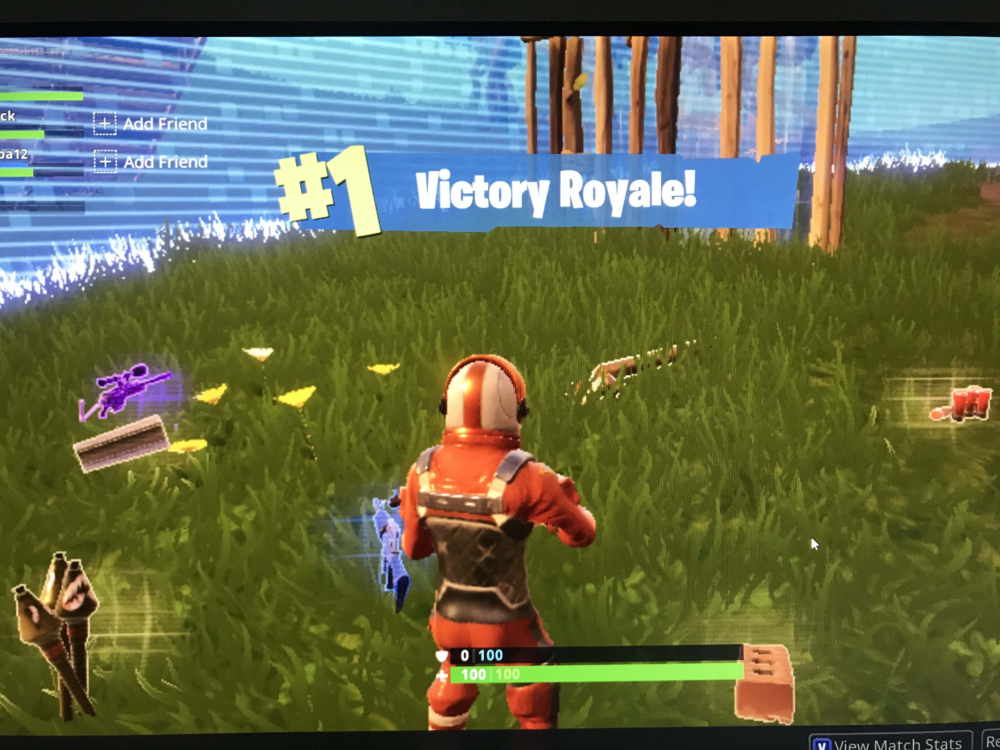
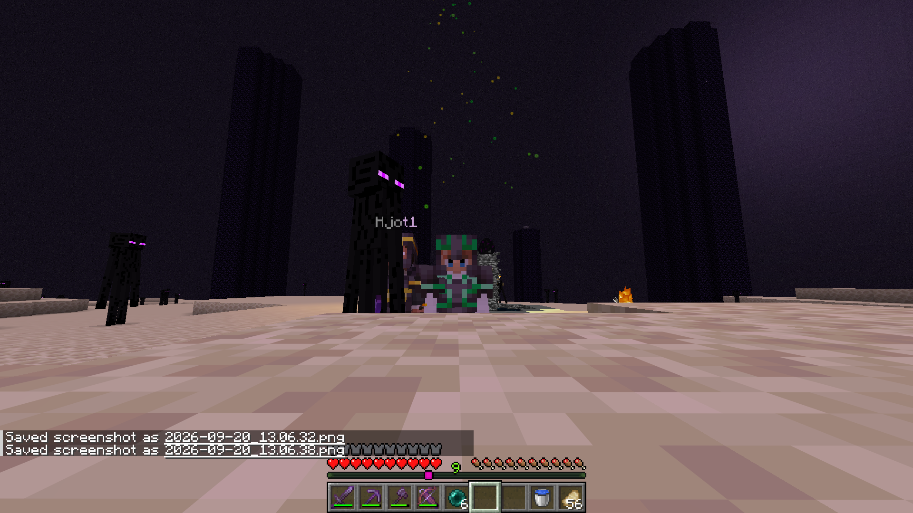
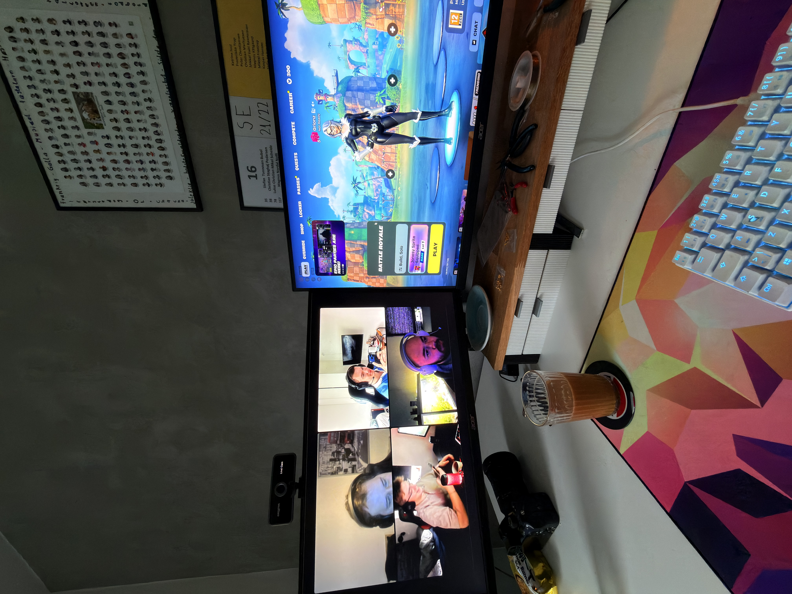